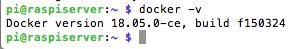

Docker es un sistema de virtualización de aplicaciones mediante contenedores, creado por Solomon Hykes y otros ingenieros. En 2013 se convirtió en un proyecto de software libre (licencia Apache) en el que participan cada vez más empresas. La versión 1.0 se publicó en junio de 2014 y ha tenido un desarrollo muy rápido. En marzo de 2017, Docker pasó a publicar una nueva versión cada mes y cambió su numeración al formato AA.MM (año y mes). Estas versiones se mantienen solamente durante un mes, aunque hay una versión trimestral que se mantiene durante cuatro meses (la primera fue Docker 17.03). Docker ofrece una versión Enterprise (de pago) y una versión Community (gratuita). La diferencia radica en el nivel de soporte y certificación que proporciona Docker a la versión Enterprise.
Los contenedores se distinguen de las máquinas virtuales en que las máquinas virtuales emulan un ordenador físico en el que se instala un sistema operativo completo, mientras que los contenedores usan el kernel del sistema operativo anfitrión pero contienen las capas superiores (sistema de ficheros, utilidades, aplicaciones). Al ahorrarse la emulación del ordenador y el sistema operativo de la máquina virtual, los contenedores son más pequeños y rápidos que las máquinas virtuales. Pero al incluir el resto de capas de software, se consigue el aislamiento e independencia entre contenedores que se busca con las máquinas virtuales.
Los contenedores son útiles en los servidores, pero también para pruebas de software, ya que incluyen todos los elementos que necesitan las aplicaciones, lo que facilita la instalación y elimina los problemas de incompatibilidad de versiones en bibliotecas y aplicaciones auxiliares.
Docker empezó estando disponible solamente para distribuciones GNU/Linux, pero desde junio de 2016 también está disponible como aplicación nativa en Windows Server 2016 y Windows 10, utiliza la virtualización ofrecida por el sistema operativo. En el caso de Windows 10,eso significa que para usar Docker de forma nativa hay que activar Hyper-V que, por desgracia, es incompatible con VirtualBox. Para poder utilizar Docker en Windows 7 o en Windows 10 sin Hyper-V, Docker ofrece desde agosto de 2015 Docker Toolbox, que relamente es una máquina virtual (que se ejecuta en VirtualBox) que contiene Docker.
El componente básico de Docker es el Docker Engine, pero Docker ofrece también una serie de herramientas para administrar, distribuir e instalar contenedores: Docker Compose, Docker Machine, etc.
Aunque un contenedor puede incluir cualquier número de aplicaciones, lo habitual es que un contenedor contenga una sola aplicación (y los programas necesarios para ponerse en marcha). Por ejemplo, si una aplicación web guarda la información en una base de datos, en vez de incluir la aplicación y la base de datos en el mismo contenedor, se suelen crear dos contenedores: uno con la aplicación web y otro con la base de datos. Por supuesto, en el contenedor de la aplicación web sí que se incluiría un servidor web.
Para que varios contenedores puedan comunicarse entre sí, Docker permite la creación de redes virtuales privadas en la que se incluyen los contenedores.
Nota: Cuando varios contenedores contienen aplicaciones web, los servidores web de cada contenedor en principio entrarían en conflicto puesto que todos atienden al puerto 80. Ese problema se presenta siempre que contenedores distintos incluyen aplicaciones que atienden a través de los mismos puertos (base de datos, etc.). Para resolver este problema, Docker permite que los contenedores escuchen por un puerto cualquiera, aunque internamente el servidor sigue utilizando su puerto habitual. En estos casos se debe utilizar un proxy inverso que redirija las peticiones exteriores al puerto correspondiente.
El proceso de creación de un contenedor incluye varias fases:
No es necesario realizar todas estas fases para crear un contenedor, pues en Internet se pueden encontrar imágenes ya preparadas por los creadores de las aplicaciones o por terceros (como Bitnami).
Para comenzar con Docker CE en Debian o Raspbian, hay que asegurarse de cumplir con los requisitos previos y luego instalar Docker.
Para instalar Docker CE, se necesita la versión de 64 bits de una de estas versiones de Debian o Raspbian, Docker CE es compatible con las arquitecturas x86_64 (o amd64) y armhf para Jessie y Stretch.
Las versiones anteriores de Docker se llamaban docker o docker-engine. Si estas versiones están instaladas hay que desinstalarlas:
$ sudo apt-get remove docker docker-engine docker.io
Si es la primera vez que se instala Docker, apt-get informa que ninguno de estos paquetes está instalado. Si hubiera alguno instalado, los contenidos de /var/lib/docker/, incluyendo imágenes, contenedores, volúmenes y redes, se conservan. El paquete Docker CE ahora se llama docker-ce.
Puede instalar Docker CE de diferentes formas, según las necesidades:
Docker proporciona scripts de conveniencia en get.docker.com y test.docker.com para la instalación de versiones edge y testing de Docker CE en entornos de desarrollo de forma rápida y no interactiva. El código fuente para los scripts se encuentra en el repositorio de docker-install.
¡¡¡ No se recomienda el uso de estos scripts para entornos de producción, y se debe comprender los riesgos potenciales antes de usarlos !!!
Una vez dicho todo esto, se puede ejecutar el siguiente comando para la instalación de docker en Raspbian: $ sudo curl -sSL https://get.docker.com | sh
Al finalizar la instalación, el propio script dice que se puede añadir al grupo docker el usuario pi, para evitar el uso de sudo con los comandos de docker, ejecutando la siguiente orden:$ sudo usermod -aG docker pi y se reinicia el sistema:
Con la opción $ docker -v, muestra la versión de docker:

Se puede instalar Docker Compose usando pip, ejecutando $ sudo pip install docker-compose
Hypriot proporciona un binario de Docker-Compose para Raspbian. Puede que no siempre esté actualizado, pero si el espacio es escaso, puede resultar útil. Para usarlo, primero hay que seguir las instrucciones de Hypriot para configurar el repositorio y luego ejecutar el siguiente comando:sudo apt-get install docker-compose
Para probar docker se ejecuta el siguiente comando:$ docker run hello-world, y docker contesta diciendo que no ha podido encontrar la imagen "hello-world:latest" en la máquina local, la busca en hub.docker.com, la descarga y la ejecuta mostrando el siguiente mensaje:
Nota: Este apartado ha sido copiado íntegramente de la Web mclibre, aunque en nuestro caso no va a ser necesario usar sudo porque se ha añadido el usurario pi al grupo docker.
sudo docker COMANDOSsudo dockersudo docker image sudo docker network
...
sudo docker cp --helpsudo docker COMANDO --OPCION=VALORsudo docker COMANDO --OPCION VALORsudo docker COMANDO --OPCION="VALOR CON ESPACIOS"En los comandos siguientes REPOSITORIO es el nombre del repositorio en el que se encuentra la imagen (por ejemplo bitnami/phpmyadmin) e IMAGEN es el nombre de la imagen descargada. Realmente, las imágenes descargadas se llaman igual que los repositorios de donde se han descargado, pero he distinguido los nombres para dejar claro cuándo nos estamos haciendo referencia a la imagen del repositiorio y cuándo a la imagen local.
sudo docker image OPCIONESsudo docker image pull REPOSITORIOsudo docker pull REPOSITORIOsudo docker image lssudo docker image rm IMAGENEn los comandos siguientes CONTENEDOR es el nombre del contenedor, que podemos elegir al crearlo, y RED es el nombre de una red ya existente.
sudo docker run --name=CONTENEDOR REPOSITORIOEl problema de este comando es que dejamos de tener acceso a la shell y sólo se puede parar el proceso desde otro terminal.
Lo habitual es poner en marcha el contenedor en modo separado (detached), es decir, en segundo plano, y así podemos seguir utilizando la shell:
sudo docker run -d --name=CONTENEDOR REPOSITORIOSi queremos ver la secuencia de arranque del contenedor, podemos poner en marcha el contenedor en modo pseudo-tty, que trabaja en primer plano, pero del que podemos salir con Ctrl+C.
sudo docker run -t --name=CONTENEDOR REPOSITORIOAl crear el contenedor se pueden añadir diversas opciones:
sudo docker run --name=CONTENEDOR --net=RED REPOSITORIOsudo docker run --name=CONTENEDOR -p PUERTO_EXTERNO:PUERTO_INTERNO REPOSITORIOsudo docker run --name=CONTENEDOR -e VARIABLE=VALOR REPOSITORIOLas variables de configuración se pueden consultar en el repositorio del que obtenemos la imagen.
sudo docker pssudo docker ps -asudo docker stop CONTENEDORsudo docker rm CONTENEDORsudo docker start CONTENEDORsudo docker exec -it CONTENEDOR /bin/bashsudo docker exec -u 0 -it CONTENEDOR /bin/bashexitsudo docker cp CONTENEDOR:ORIGEN DESTINO
sudo docker cp ORIGEN CONTENEDOR:DESTINO
Esta página forma parte del proyecto Mini servidor para prácticas ASIR por Nacho López Espert